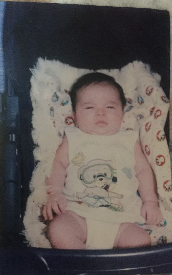

El Día Que Llegué al Mundo
Mi historia comienza un 24 de julio de 20005 de madrugada, a las 3 Am mi madre empieza a sentir contracciones y acude a el doctor. Mis padres, llenos de nerviosismo, se dirigieron al hospital tan pronto como mi madre sintió las primeras contracciones.
Después de varias horas de labor, finalmente llegué al mundo, llenando la habitación con mi primer llanto.
Detalles de mi Nacimiento
- Fecha: 24 de julio de 2005
- Hora: 4:05 PM
- Lugar: Hospital Maternidad, el viejo
- Peso: 6.5 libras
- Estatura: 59 cm

Un Recuerdo Especial
Mi abuela siempre cuenta la historia de cómo, cuando me vio por primera vez, notó que era una viva copia de mi mama y que practicamente era como verla en version masculina.
Mi nacimiento marcó el inicio de una nueva etapa para mi familia. Mis padres, convertidos en primerizos, enfrentaron los desafíos y alegrías de la paternidad con amor y dedicación. Cada día era una nueva aventura, llena de descubrimientos y momentos inolvidables.
Aunque no puedo recordar esos primeros momentos, las historias que me han contado con cariño me permiten imaginar la felicidad y el amor que rodearon mi llegada al mundo. Mi nacimiento no solo fue el comienzo de mi vida, sino también el inicio de un hermoso viaje.